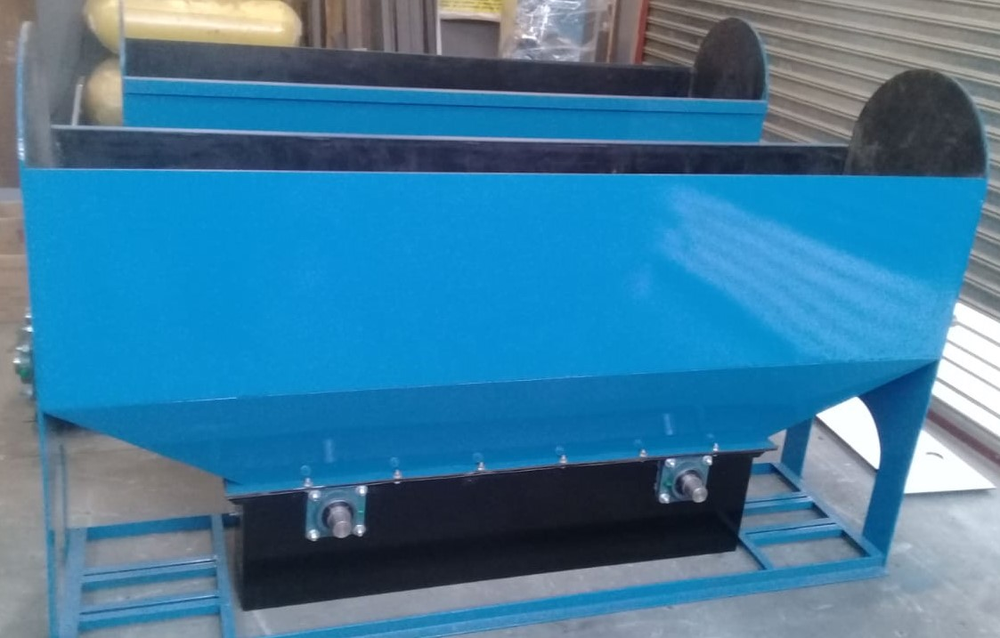
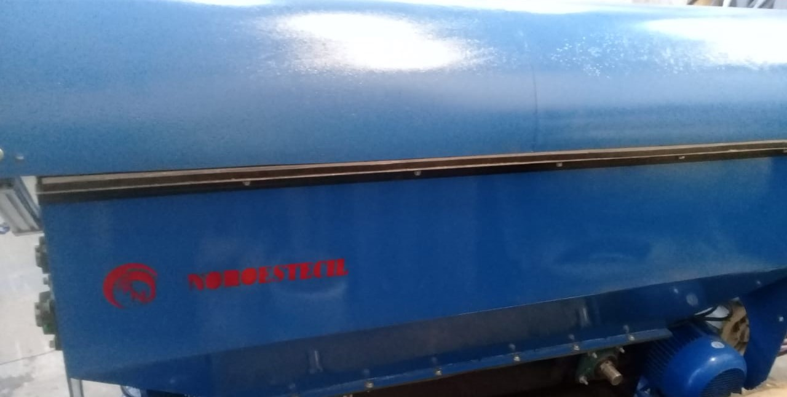
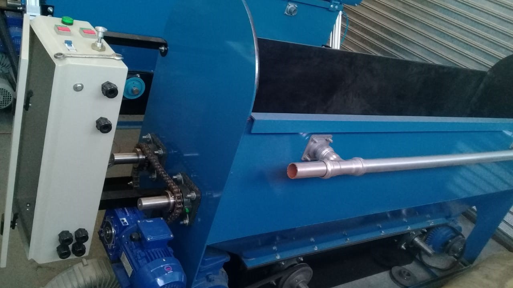
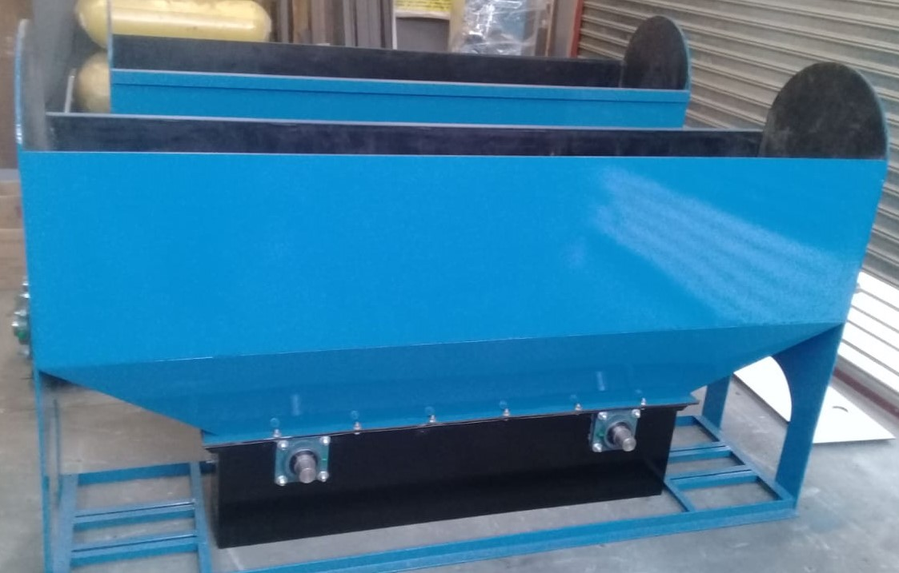
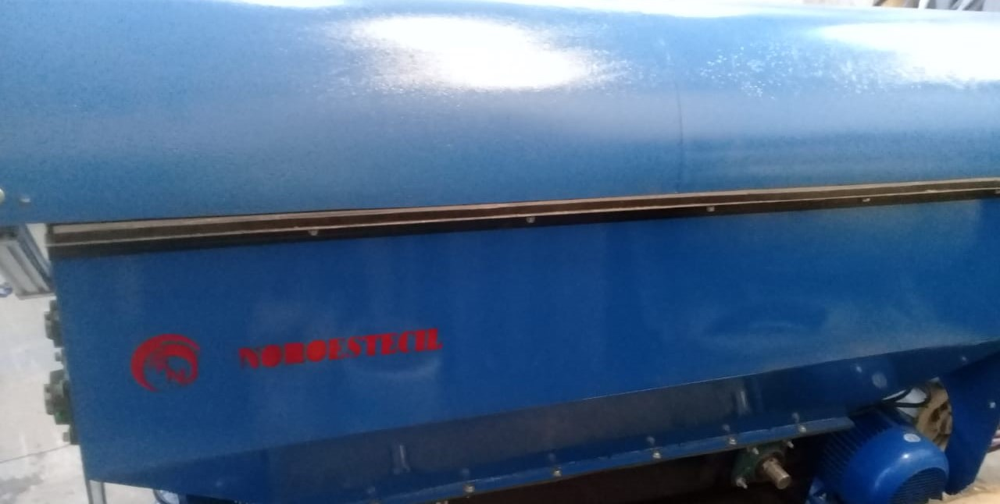
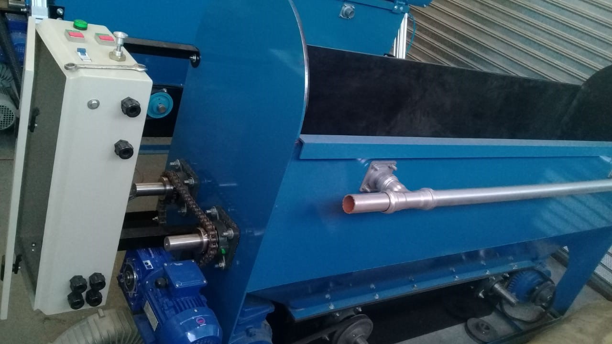

MAQUINA DE ENSAYO HIDROESTÁTICO
La misma fue desarrollada para la actividad del control periodico obligatorio que hace la gran seguridad del GNC .
caracteristicas :
Modelo de 0 a 300 bar o de 0 a 500 bar .
Cuenta con una bomba europea de primera marca con diferentes motorizaciones dependiendo de la presión maxima de prueba a alcanzar segun requerimientos
Manometros de 150 mm patron (opcional) y de 100 mm de uso con contactos auxiliares para corte automatico a diferentes presiónes regulables .
Termometro digital con presición decimal para medición de la temperatura del agua durante el ensayo .
Timer automatico calibrable de uno a cuatro minutos con activación de alarma luminico sonora pasado el tiempo de estanqueidad.
Bureta graduada con regla milimetrica para la medición de expansiones totales y permanentes .
Motores de 10 hp o 15 hp protegidos por relevos termicos y comandos a 24 v .
mangeras para soportar 400 bar con acople rapido incluido.


IMAN MECANICO 300KG
Iman de accionamiento mecanico para la carga y descarga de cilindros en granalladora y/o manipulacion de los mismos.
La eficiacia de este en una superficie cilindrica baja aproximadamente al 50% lo cual este modelo de 300kg es apto para izaje de cilindros de hasta 150kg.

BOMBAS Y PLACAS BASE
Bombas de presión de origen europeo marca UDOOR y HAU dependiendo de disponibilidad de todas las presiónes y caudales de trabajo que se requieran
motores acoplados por manchon elastico de acero con amortiguación de grilón de primeras marcas como SIEMENS, WEG y mas economicos no tan reconocidos.

MESA BASCULANTE
La misma fue diseñada para el movimiento necesario para los ensayos hidroestaticos, permitiendo una movilidad desde 0º a 360º. Lo cual nos permite realizar el ensayo en forma horizontal y proceder al vaciado del mismo sin necesidad de manipularlo lleno con agua en su interior.
motoreductor en convinación con caja de transmisión, sujecion neumatica por accionamiento manual, velocidad de giro regulable a travez de variador de velocidad, estructura construida robusta para pesos de hasta 250kg y hasta 300kg
GRANALLADORA SHOTEADORA
granalladora diseñada en formato compacto especifica para cilindros de diametros desde 150mm a 450mm,
ideal para GNC y GASES DEL AIRE, con un largo efectivo de trabajo de 2m nos permite cargar de a dos
cilindros a la vez de GNC, bajando el tiempo del ciclo de despintado (3 minutos) al 50% ahorrando
energia electrica, tiempo y granalla
Totalmente revestida internamente en goma y con protectores de chapa templada en las zonas de mayor desgaste hacen su gran durabilidad.
Ejes mazisos de rotación revestidos en goma accionados por dos motores de 7.5hp
Comando de accionamiento electrico a 24v, contactores con relevos termicos y timer regulable de ciclo de trabajo
Motorreductor de giro por cadena y piñones, aspiracón de polvo independiente con deposito de residuos con doble filtro.
 




